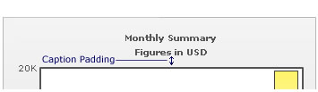
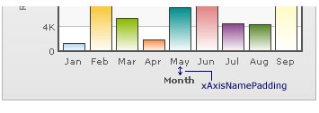
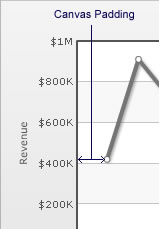

|
| FusionCharts lets you define various paddings and margins. We will see them one-by-one. |
| |
| Chart Margins |
| By default, FusionCharts provides some padding between the chart border and the canvas. This is called the chart margin and each of the margins - left, right, top, bottom chart can be set individually. |
 |
Chart Left Margin |
| Amount of empty space that you want to put on the
left side of your chart is called chart left margin. Nothing is rendered in this space. The XML used to configure the same is: |
| <chart chartLeftMargin="15"> |
| |
Chart Right Margin |
Amount of empty space that you want to put on the
right side of your chart. |
| <chart chartRightMargin="15"> |
| |
Chart Top Margin |
Amount of empty space that you want to put on the
top of your chart.
|
| <chart chartTopMargin="10"> |
| |
Chart Bottom Margin |
Amount of empty space that you want to put on the bottom of
your chart. |
| < chart chartBottomMargin="10"> |
| |
| Caption Padding |
This attribute lets you define the space between the caption of the chart and the top of the chart canvas. But when you have a sub-caption defined in the chart, it controls the space between the sub-caption and the top of the chart canvas. |
|  |
| XML: |
| <chart captionPadding="15"> |
| |
x-Axis Name Padding |
Using this, you can set the distance between the top of
x-axis title and the bottom of data labels (or canvas, if data labels
are not shown). |
|
|  |
| XML: |
| <chart xAxisNamePadding="10"> |
| |
y-Axis Name Padding |
| The padding that you want to set between the y-axis name and values. |
 |
| XML: |
|
| <chart yAxisNamePadding="10"> |
| |
| y-Axis Values Padding |
| This allows you to set the padding between the left end of the chart canvas and the y-axis values. |
 |
| XML: |
|
| <chart yAxisValuesPadding="5"> |
| |
| Label Padding |
| This attribute sets the vertical space between the
canvas bottom edge and the data labels. |
 |
| XML: |
| <chart labelPadding="3"> |
| |
| Value Padding |
| It controls the space
between your columns/anchors and the value
textboxes. |
 |
| XML Example: |
| <chart valuePadding="3" > |
| |
| Canvas Padding |
| For a line/area chart, the padding between the canvas border and the position where the line/area chart begins to draw is called canvas padding. |
|  |
| XML Example: |
| <chart canvasPadding="30" > |